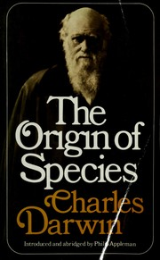

On the Origin of Species
Book·Charles Darwin, 1859·物种起源

The original source of the theory of natural selection and the starting point for every evolutionary perspective.
- Author
- Charles Darwin
- Year
- 1859
- Difficulty
- Advanced
- Kind
- Primary text
- Schools
- Evolutionary Psychology, Ethology
Editions
- Chinese edition 《物种起源》 达尔文 · tr. 舒德干 · 北京大学出版社 · 2018 Douban 9.7 (119 ratings) Douban page ↗
- English edition On the Origin of Species Charles Darwin · Oxford World's Classics, ed. Gillian Beer · 2008 Open Library ↗